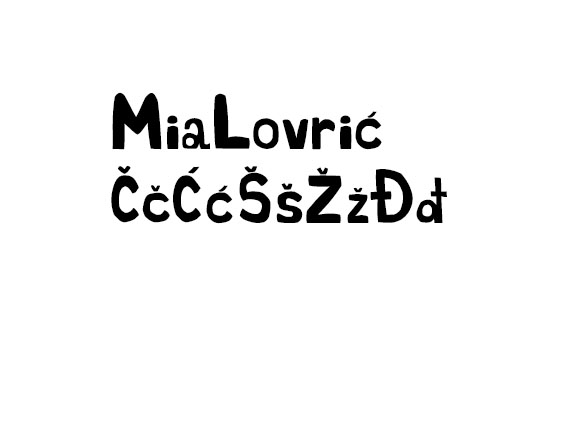
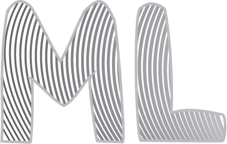
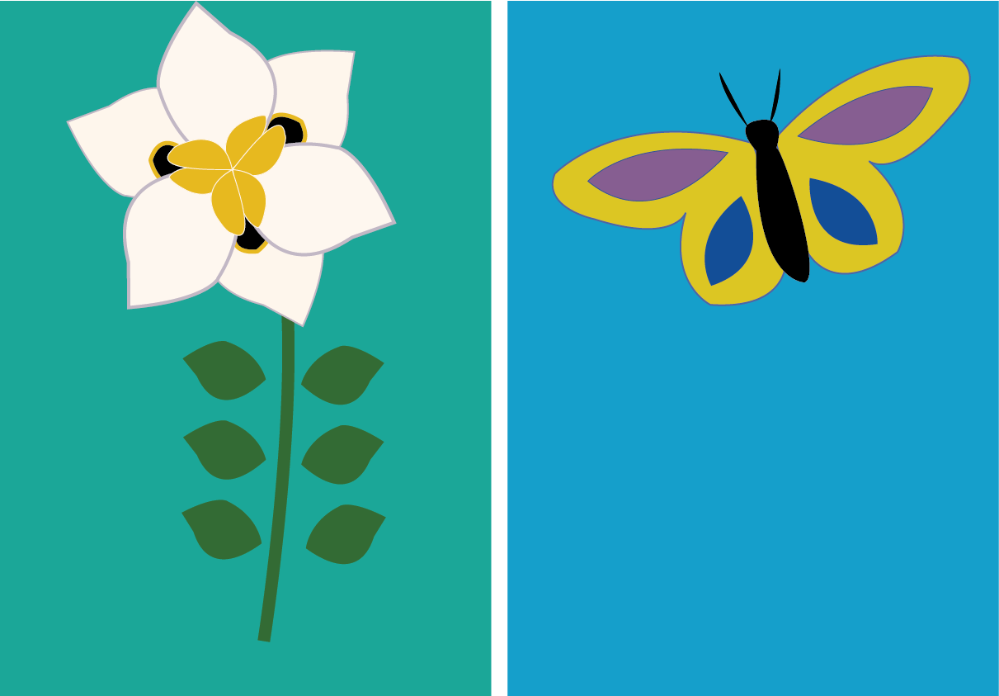
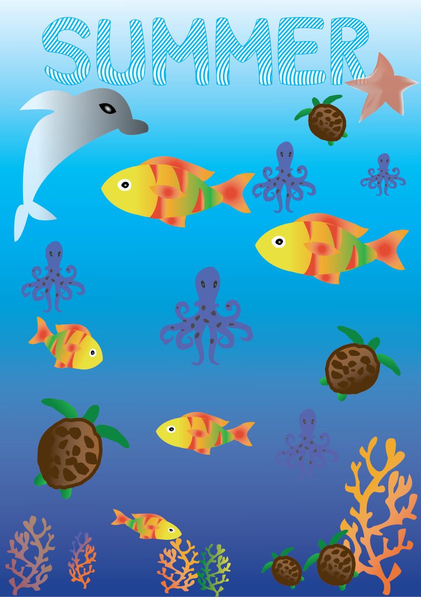
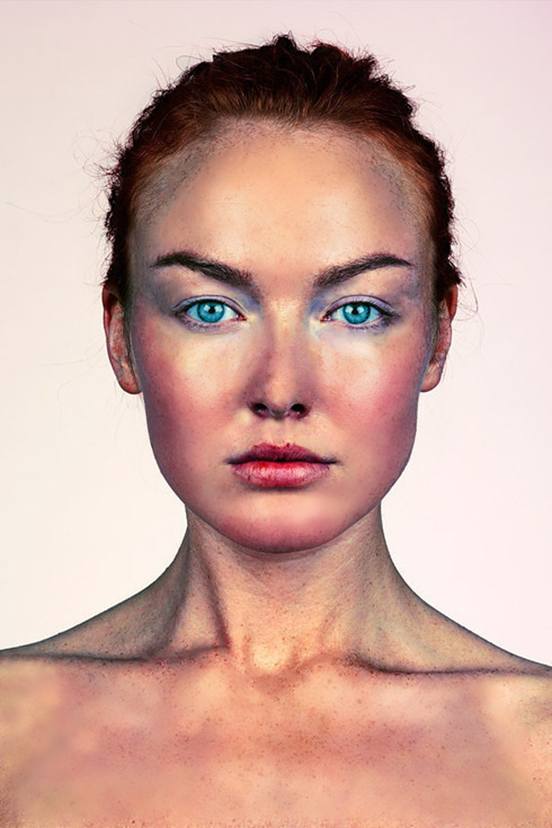
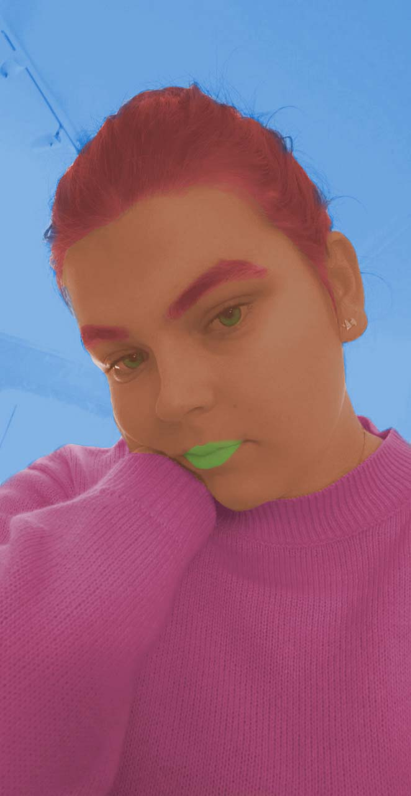
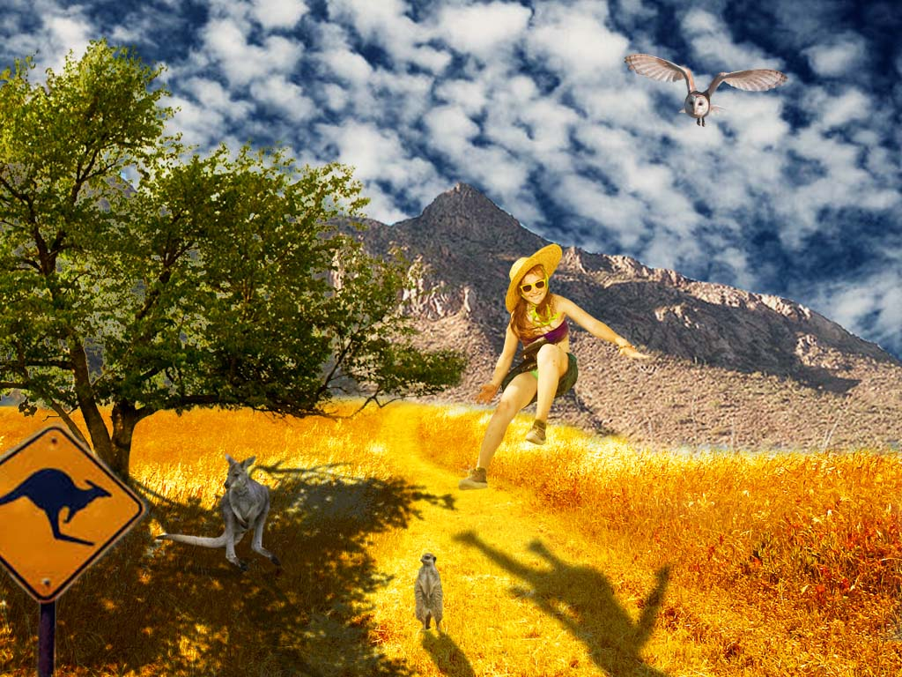

Prva vježba: Font U ovoj vježbi naučili smo osnovna pravila pravljenja fonta te smo i sami napravili nekoliko vlastitih znakova u programu za pravljenje fonta.
Druga vježba: Crtanje Bezierovih krivulja u koordinatnom sustavu U ovoj vježbi smo se koristili Bezierovim krivuljama u koordinatnom sustavu. Kada smo dobili odgovarajuće krivulje ukomponirali smo ih u novi font koji smo napravili tj. naše inicijale.
Treća vježba: Crtanje u Illustratoru U trećoj vježbi smo učili koristiti razne tehnike i pomagala za crtanje u Illustratoru. Crtali smo uz pomoć predloška. Koristi se raznim tehnikama rotacije i kopiranja koje omogućuju jednostavno i praktično crtanje.
Četvrta vježba: Illustrator: SLOŽENI OBJEKTI, GRADIJENTI U četvrtoj vježbi radili smo u Illustratoru, koristili se različitim gradijentima i crtali složene objekte, ali i primjenjivali znanje koje smo dotada stekli iz prethodnih vježbi.
Prvi projektni zadatak:Rad u Illustratoru i pravljenje fonta U prvom projektnom zadatku smo primjenili sve tehnike koje smo naučili u prve četiri vježbe.
Peta vježba: Retuširanje U petoj vježbi naučili smo retuširanje, popravljanje nedostataka, uklanjanje oštećenja i sl.
Šesta vježba: Koloriranje U ovoj vježbi smo naučili kako sami obojati i urediti sliku.
Sedma vježba: Fotomontaža U sednom vježbi naučili smo kako dodavati određene elemente na sliku, kojim ih tehnikama što bolje uklopiti i izrezati.

Drugi projektni zadatak: Rad u Photoshopu
Osma vježba: Kinemagraf U osmoj vježbi naučili smo kako od jednog videa napraviti gif u kojem u svi dijelovi statični osim onih dijelova koje mi napravimo da nisu, a to radimo koristeći mogućnost transparencije png formata.

Deveta vježba: Obrada videa, zvuka, efekti U devetoj vježbi naučili smo obradu videa, rezanje, dodavanje efekata itd.